KAGGO UNVEILS NEW LEADERSHIP COMMITTEE TO LEAD KYADONDO FC TO MASAZA CUP 2026 VICTORY

The Kaggo of Kyadondo, Hajji Ahmed Magandazi Matovu, has unveiled a selected team of competent leaders to handle all affairs related to building a winning team for the Masaza Cup 2026.
In his speech, the Kaggo urged the new team to watch all obstacles that hinder Kyadondo Sazza from winning. He encouraged them to emulate his leadership style, which has made Kyadondo one of the best counties in Buganda.
Incoming Chairman Mr. Lubwama Nicholas and Patron Hajji Jafar Ssenganda promised to search for financial resources so the team can secure quality players to win the trophy.

HAJJI JAFFER SSENGANDA
PATRON
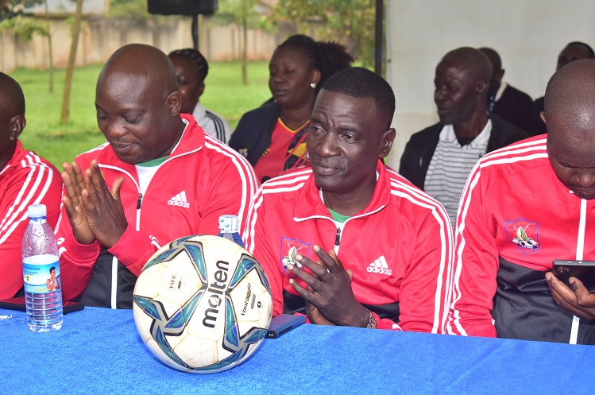
Mr. LUBWAMA NICHOLAS
SSENTEBE (CHAIRMAN)

Mr. MUGAMBE PAUL
VICE CHAIRMAN
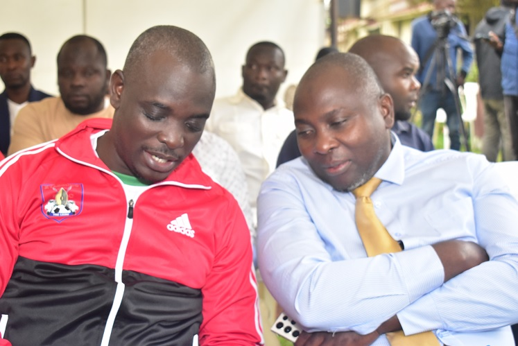
Mr. LUBEGA ROBERT
CEO / SECRETARY
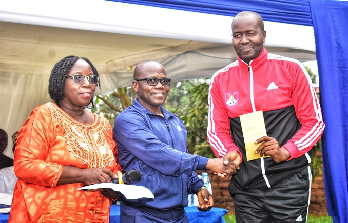
HAJI SSEMWANGA NOORMAN KABOGOZA
TEAM MANAGER

Mr. SSEBAGALA SULAIMAN
SAFETY, SECURITY & PROTOCOL

Mr. KAZZIBWE HASSAN SSAAVA
MEDIA PERSONNEL (RADIO SIMBA)
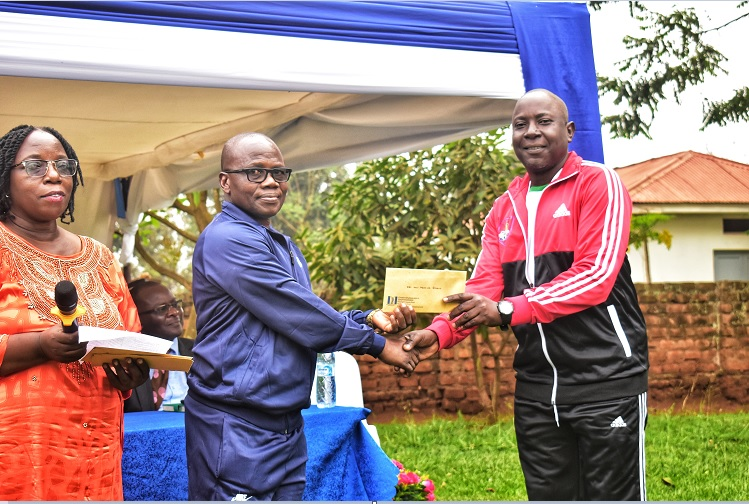
Mr. MBOOWA RONALD
TECHNICAL
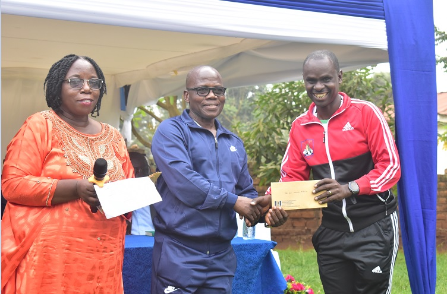
Mr. DDUGU MARTIN
TREASURER
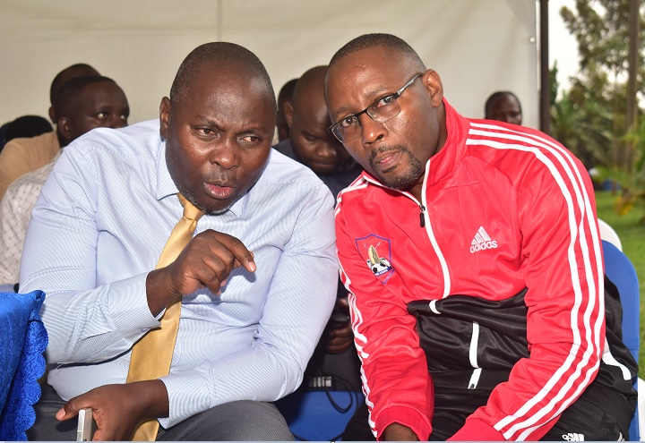
Dr. NDUGGA FRANK
TEAM DOCTOR (PEOPLE’S MEDICAL)
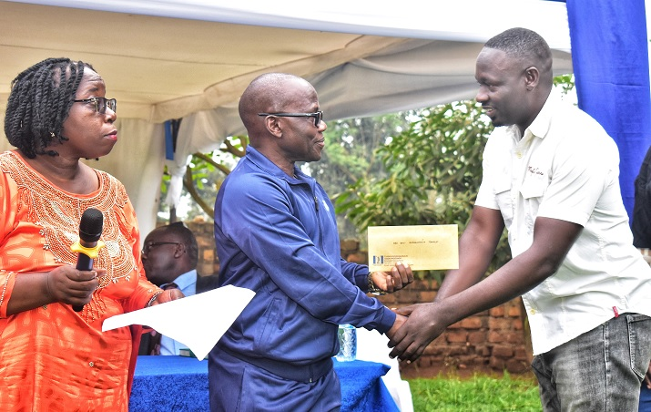
Mr. SSERWANJA SHARIF
WELFARE
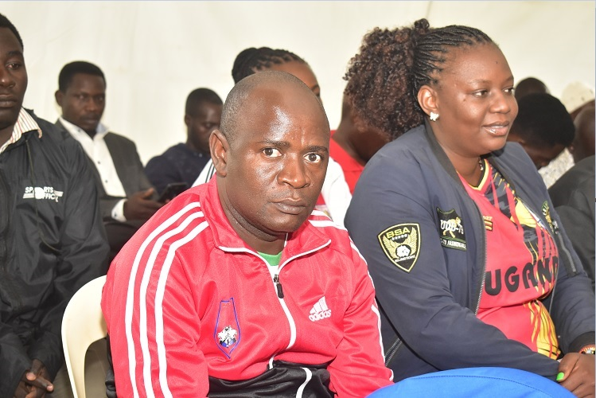
Mr. LUBWAMA GODFREY
STADIUM MANAGER
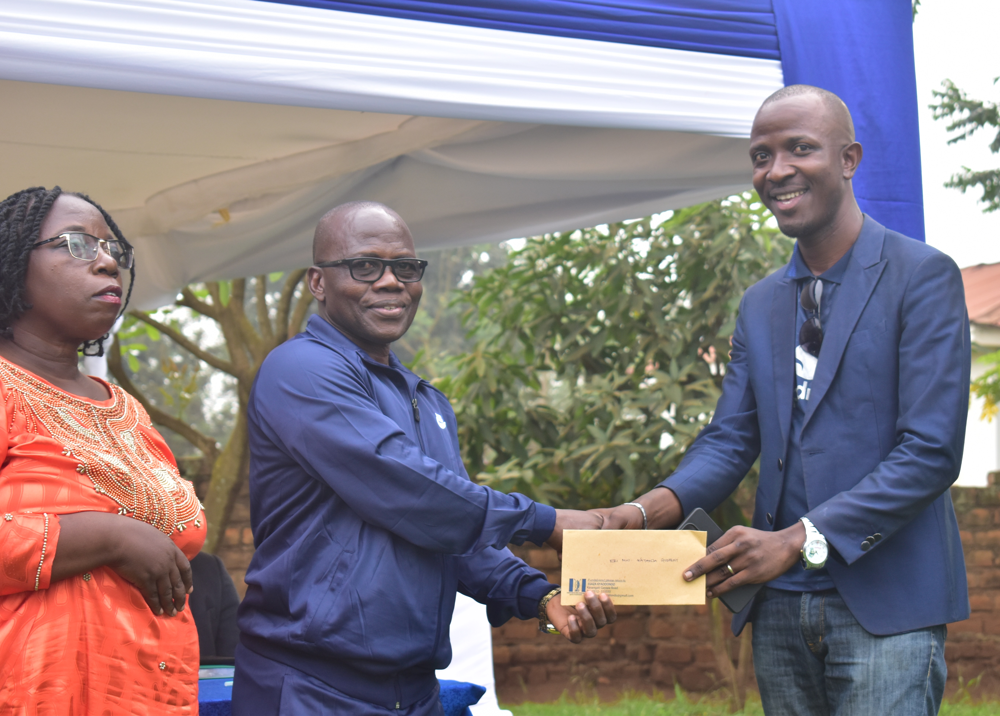
Mr. KAYANJA GODFREY
VICE CHAIRMAN SUPPORTERS
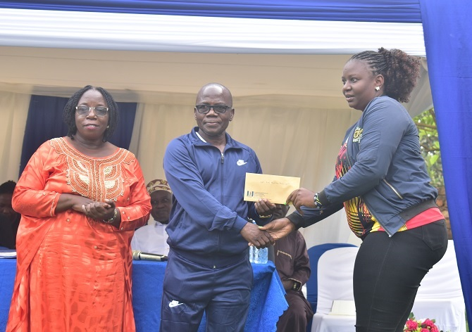
Ms. NABUNYA LYDIA
VICE SECRETARY / CEO
The Verdict: Regarding their experience and passion for Kyadondo County, what do you see this powerful team producing?
The Kaggo and his vice Dr. Fiona Nakalinda Kalinda prayed for the team and asked them to bring results. Dr. Fiona highlighted that Kyadondo has been the most disciplined county and urged supporters to maintain this standard.
PHOTO GALLERY
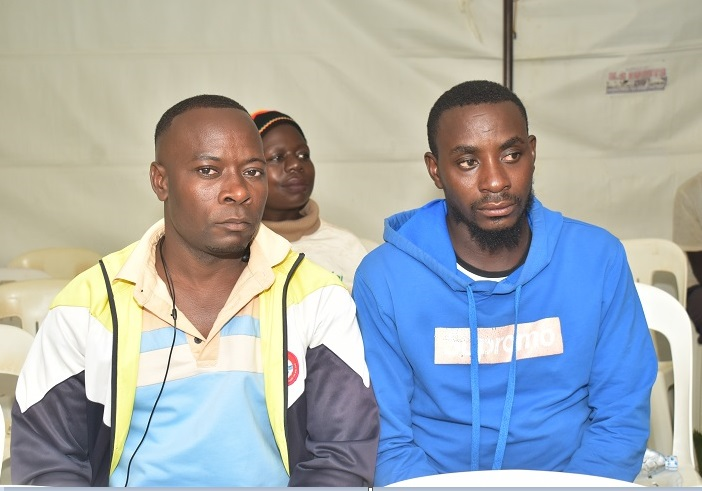
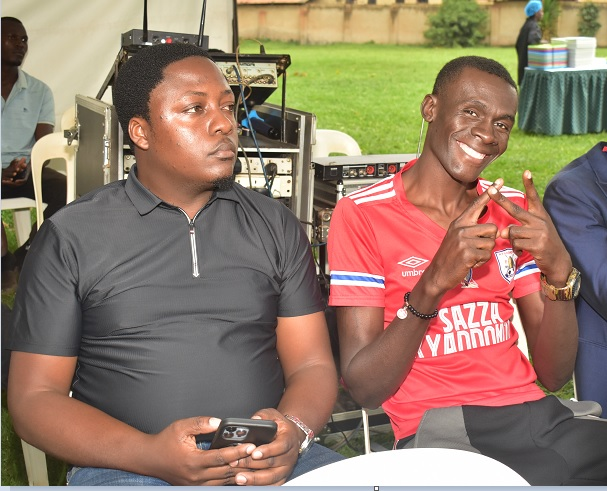
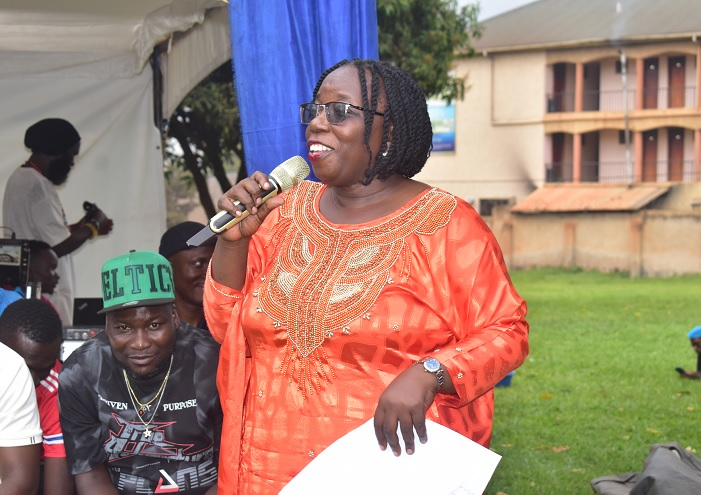